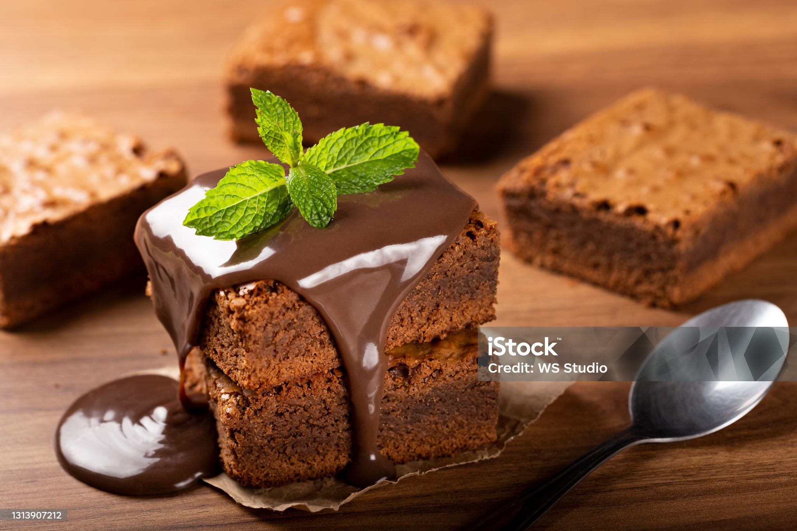

BOLO DE CHOCOLATE
| Dificuldade | Porções | Tempo de Preparo |
|---|---|---|
| Fácil | 10 pedaços | 60 minutos |

Ingredientes
- 3 ovos
- 1 e1/2 (chá) de açúcar
- 2 chicaras de farinha de trigo
- 1 chicara de chocolate em pó
- 1/2 xícara de óleo
- 1 colher de sopa de fermenteo em pó
- 1 pítada de sal
- 1 xícara de agua quente
Modo de preparo
- Bata no liquidificador os ovos, o açúcar, o oléo, o achocolatado, a farinha de trico aos poucos
- Despese a massa em um tigela e adicione a água quente, o sal e o fermento misturando bem
- Despeje a massa em uma forma untada e asse em forno médio-alto (200°) pré aquecido por 40 minutos
- Desenfomre ainda quente